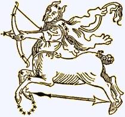

USKONTO
OPPIMATERIAALIA NETISSÄ VUODESTA 1999 LÄHTIEN
PSYKOLOGIAN PIKALINKIT
PSYKAN VIDEOABIKURSSIT:
PSYKOLOGIAN MAAILMA -VIDEOKERTAUSKURSSI ABEILLE (vlogi) - UUSI OPS!!
PS7 ABI KERTAUSKURSSI (opetustilanne) - VANHA OPS
(OPS 2016-):
PS1 Psyykkinen toiminta ja oppiminen
PS2 Kehittyvä ihminen
PS3 Tietoa käsittelevä ihminen
PS4 Tunteet, psyykkinen hyvinvointi ja mielenterveys
PS5 Yksilöllinen ja yhteisöllinen ihminen
Uskonto:
UE1 UE2
UE3 UE4
UE5 UE6
Filosofia:
FI1 FI2
FI3 FI4
FI5

Vanhimpia tieteitä ja uskomuksia koko maailmanhistoriassamme on astrologia, usko tähtien vaikutukseen elämässämme aina syntymästä kuolemaan asti, aina siihen, kenen kanssa olisi sopiva mennä naimisiin tai luonteenpiirteisiimme jne. Minä olen Jousimies eli Sagittarius, joten minua hallitsee planeetta Jupiter, olen innokas matkailija (en matkusta laisinkaan ulkomaille, koska pelkään lentämistä), tuli on elementtini - no, jaa, olen positiivinen ihminen (näin varmasti ennustetaan kaikille) ja maskuliininen (no sitä kyllä olen), olen avoin, hymyileva, onnellinen, hurmaava, viehättävä. Jousimies on hyvä monessa asiassa (no totta mooses!). Jousimies on älykäs (siitä se siis johtuu, kun äo:ni on 136 ja neuropsykologisten testien mukaan olen keskivertosuomalaista huomattavasti lahjakkaampi, erittäin lahjakas - omakehu haisee!). Itse en astrologiasta perusta, mutta onhan se mukava lukea, kuinka minua kehutaan ja näin voin kohottaa itsetuntoani, joka Jousimiehellä on muutenkin pilvissä... Kuvan Sagittarius on keskiaikainen piirros. Netistä löydät nykyisellä kuvahaulla ties miten hurmaavia jousimiespiirroksia ja -maalauksia - hurmaaviahan me olemmekin ;)
SUOMEN USKONNOLLINEN KENTTÄ
(linkit sivustoni teksteihin):
SUURIMPIA:
Suomen evankelis-luterilainen kirkko
Suomen ortodoksinen kirkko
Suomen helluntaiherätys
Islam
Jehovan todistajat
Suomen Vapaakirkko
Katolinen kirkko Suomessa
Suomen Adventtikirkko
Mormonit
MUITA KRISTILLISIÄ OSIN RYHMITELTYNÄ:
Pelastusarmeija
Anglikaanit
Baptismi
Metodismi
Evankelikaalisia
Karismaattisia
Muita luterilaisia ja kristillisiä
MUITA USKONNOLLISIA YHTEISÖJÄ OSIN RYHMITELTYNÄ:
Krist.vaikutteisia
Buddhalaisuus
Juutalaisuus
Hindulaisperäisiä
Synkretistisiä
Muita
|
Muita uskonnollisia ja katsomuksellisia liikkeitä Suomessa
Akupunktio.net
Acupuncture Today (engl.)
Rajatieto.org lähinnä markkinoi astrologisia, tarot ym. palveluja
Suomen Astrologinen Seura
Horoskooppi.com
Suomen Ammattiastrologit ry
UFO-Finland ry.
Suomen Ufotutkijat FUFORA
Pakanaverkko Ry
Nouseva Aurinko
Kultainen Sydän
Hengen ja tiedon messut (Rajatiedon sivuilla)
Suomen Luonnonuskontojen Yhdistys
The Celtic Connecition (engl.)
MUITA LINKKEJÄ:
Skepsis ry.
Vapaa-ajattelijain liitto
- Nykyisin maassamme on satoja uskonnollisia ryhmittymiä, joista monet eivät ole edes rekisteröityneitä. Tässä kiinnitetään huomiota ei ainoastaan rekisterissä oleviin
ryhmiin, vaan ennen muuta uskonnollisuuteen, joka helposti kiehtoo meitä, ja jota emme välttämättä tunnista uskonnollisuudeksi (satanismia lukuunottamatta).
AKUTERAPIA
- pohjana taolaisuuden oppi jangista ja jinistä, jotka pyritään saattamaan tasapainoon eli taoon.
- akupunktiossa ohuita neuloja pistetään kehon eri osiin sen mukaan, missä ns. meridiaanit kulkevat pisteestä varsinaiseen kipupaikkaan. Neulojen avulla pyritään jang ja jin saattamaan harmoniaan eli tasapainotilaan, jolloin kipu häviää.
- esimerkiksi ns. mahalaukkumeridiaanin pisteitä löytyy silmän alta, ohimolta, polvesta jne. Varsinaisesti mahalaukkumeridiaani kulkee suoraan poskea alas suun viereen ja kaartuu sitten leuasta suoraan ylös korvan eteen ja siitä tukan rajaan.
- maassamme muutamat lääkärit ovat erittäin innokkaita akupunktion käyttäjiä, sillä akupunktio näyttää tehoavan joihinkin potilaisiin
- tiede ei ole pystynyt todistamaan akupunktion tehoa, vaan yleensä tutkimukset osoittavat, että tieteellisesti katsottuna akupunktion tehoa kipuihin ei ole voitu osoittaa varmuudella.
- toisaalta itse näkisin asian avoimemmin siten, että jo se, että ihminen rentoutuu akuneulat kehossa, on hyödyllistä tämän päivän kiireellisille ihmisille, joten siinä mielessä ei tulisi lähteä tyrmäämään tätäkään vaihtoehtoterapiaa, vaan nähdä se positiivisesti
- akuterapiaan kuuluu nykyisin myös ns. akupainanta ja -hieronta (tunnettuja olleet myös akunapit esimerkiksi laihduttamiseksi)
- olen itse kokeillut sähköakupunktiota kipuihini, mutta siitä ei ollut ainakaan minulle ei haittaa eikä hyötyä (kokeilu kuului täysin koulu- eli yliopistolääketieteen piiriin)
ASTROLOGIA
- astrologia viittaa juuri tähdistäennustamiseen, astronomia tähtitieteeseen
- astrologia on kaikille tuttua horoskoopeista, joita useimpien viikkolehtien sivuilla julkaistaan. Niissä "ennustetaan" tulevia tapahtumia tai esitetään sopivia piirteitä
henkilöstä. Usein lehtien horoskooppien tekijöitä itse tosiastrologit pitävät epäpätevinä ja lisäksi lehtien horoskoopit pohjautuvat pelkästään ns. aurinkomerkkeihin (eli siihen eläinradan merkkiin, jossa Aurinko sijaitsee tähtikartassa; leijona, härkä, jousimies jne.)
- astrologia alkoi muinaisessa Babyloniassa, Mesopotomiassa, jossa pappien tehtävänä oli tarkkailla tähtien liikkeitä ja luoda tähtikarttoja. Näiden tähtikarttojen pohjalta voitiin ennustaa esimerkiksi kuninkaan syntyminen (vrt. Betlehemin tähti, jota itämaan tietäjät lähtivät seuraamaan; tietäjät ovat saattaneet olla persialaisia Zarasthustran pappeja).
- nykyinenkin astrologia perustuu tähän muinaiseen babylonialaiseen maailmankuvaan, jonka mukaan kaikkeuden keskipisteenä on maa (eikä esimerkiksi meidän aurinkokunnassamme aurinko) - näin siis jo lähtökohta nykyastrologiallekin on täysin epätieteellinen ja vailla pohjaa.
- kun 1500-luvulla hajosi vanha maakeskeinen maailmankuva (Kopernikuksen, Keplerin, Galilein ja Newtonin ansiosta), jatkoi astrologia vanhan maailmankuvan mallin mukaan. Vaikka nykyastrologit länsimaissa tietävät, että aurinko on aurinkokuntamme keskus, niin opillisesti he joutuvat suhtautumaan siihen edelleen yhtenä planeettana. Uusia planeettoja on toki otettu mukaan oppisysteemeihin (kuten Uranus, Neptunus ja Pluto, jota ei muistaakseni enää planeetaksi luetakaan)
- astrologia on epätieteellisesti keskittynyt vain meidän aurinkokuntamme keskeisiin planeettoihin ja joihinkin tähtiin, niitä ylikorostaen, eikä huomioida laisinkaan todellisia mittasuhteita, mitkä nykytiede on paljastanut kosmoksesta.
- tunnetuimpia astrologisia systeemejä on ns. syntymähoroskooppi, jossa tulee tuntea henkilön synnyinhetki minuutilleen ja paikka. Tämän pohjalta sitten laaditaan syntymätähtikartta, jossa näkyy tähtien asennot syntymähetkellä
- tähtikartta ei ole normaali taivaankappaleiden suhteita ja etäisyyksiä esittävä kartta, vaan omanlaatuinen karttasysteemi, jossa keskeisiä ovat tietyt tähtikuviot
(kuten neitsyt, leijona, rapu, kaksoset, härkä jne.) sekä planeetat (joiden joukossa mm. aurinko), lisäksi kartta on jaettu ns. huoneisiin (huonejakosysteemi saattaa vaihdella riippuen, mihin koulukuntaan astrologi kuuluu; siis kuka onkaan oikeassa?) Mielenkiintoista on että tähtikartta on vain yksiulotteinen, ts. etäisyydet planeettoihin ja tähtiin eivät merkitse juuri mitään (vaikka tieteellisesti voisi ajatella juuri etäisyyksillä olevan enemmän merkitystä kuin katseen mukaisella sijainnilla eri ilmansuunnissa).
- tähtikarttojen tulkinnassa on erilaisia tapoja ja sääntöjä valtavasti riippuen aina tulkitsijasta
- "Kuten ylhäällä, niin alhaallakin" (Hermes Trismegistos); näin astrologit ajattelevat nykyäänkin
- astrologiaa on harjoitettu lähes kaikkialla maailmassa; mm. Intian hindulaisuudessa, buddhalaisuudessa ja monissa muissa uskonnoissa astrologialla on keskeinen merkitys; myös keskiajan kristinuskolle astrologia oli tärkeä; esim. Filip Melanchton (Lutherin lähin työtoveri) ei uskaltanut lähteä tuomaan uskonpuhdistusta Skandinaviaan, koska hänen syntymähoroskooppinsa mukaan hän tulisi kuolemaan merimatkalle lähdettyään.
- astrologian toimivuus liittyy useimmiten siihen, että ihmisten tiettyjä tarpeita ruokitaan (esim. horoskoopeissa korostetaan sopivasti positiivisia seikkoja, jotka miellyttävät kutakin ihmistä) ja ihmiset ovat yleensä taipuvaisia taikauskoon (vaikka vain leikilläänkin; esim. numero 13, perjantai 13.päivä, musta kissa juoksi tien yli jne.). Useimmat ihmiset hyväksyvät horoskooppinsa kyselemättä ja uskovat, että se voi merkitä jotakin hänelle. Usein horoskooppeihin suhtaudutaan kuitenkin pelkkänä ajanvietteenä.
- Raamattu kieltää kaiken ennustamisen eri merkkien (tähtien, maksan, vainajahenkien jne.) avulla (esim. 3.Moos.19:26; 5.Moos.18:10).
NEW AGE -LIIKE
- New Age eli Uusi Aikakausi, sanalla on tarkoitettu suurta käännekohtaa, johon koko ihmiskunta tai maailma tulee siirtyessään Kalojen ajasta Vesimiehen aikaan (vanhempi
nimitys New Agestä).
- Vesimiehen aika termi ollut jo esillä teosofiassa 1900-luvun vaihteessa
- Euroopan keskuksena toiminut 1970-luvulla syntynyt skotlantilainen Findhorn-yhteisö
- New Age ei ole yksiselitteinen uskonto, vaan valtava määrä erilaista uutta uskonnollisuutta, yleisnimike, johon sisältyy paljon erilaisia asioita ja liikehdintöjä
- New Age Movement (NAM) -liikkettä olisi mielestäni parempi nimittää Uuden aikakauden liikehdinnäksi
- NAM:in kirjo näkyy hyvin Lontoon Mind-Body-Spirit-festivaaleilla, samoin Suomen vastaavassa tapahtumassa: Hengen ja Tiedon messuilla.
- NAM ei ole vain intialaisperäistä uskonnollisuutta sisältävä, vaan Marilyn Fergusonin tekemän gallupin mukaan NAM:in jäsenet ovat saaneet eniten vaikutteita seuraavilta
henkilöiltä (kirjoista): Teilhard de Chardin (katolinen, teistisen evoluutioteorian kehittelijä), C.G. Jung (Freudin työtoveri ja psykoanalyytikko), Abraham Maslow ja Carl Rogers (humanistisia psykologeja), Aldous Huxley, Robert Assagioli, J. Krishnamurti, Paul Tillich, Herman Hesse jne.
- Fergusonin tutkumuksen mukaan vaikutteita NAM:in kannattajat ovat saaneet lähinnä zen-buddhalaisuudesta, joogasta,kristillisestä mystiikasta, psykosynteesistä, jungilaisesta terapiasta, Tiibetin buddhalaisuudesta, TM:stä, suufilaisuudesta, transaktioanalyysistä, est-terapiasta ja kabbalismista.
- NA-liikehdinnän takana ovat ainakin seuraavat laajat suuntaukset: 1) esoteeris-okkultistiset liikkeet (teosofia, spiritualismi, kabbalismi), 2) idän uskonnollisuus (lähinnä hindul. ja buddhal., jooga ja meditaatio), 3) positiivinen ajattelu sekä 4) humanistinen ja transpersoonallinenpsykologia (Jung, Maslow, Fromm, Frankl, Rogers)
- NA:n juuret ovat enemmänkin länsimaisessa ajattelussa kuin idän uskonnoissa (jopa luterilaisuudessa, ruusuristiläisyydessä, vapaamuurariudessa, Hermes Trismegistoksessa, svedenborgilaisuudessa ja Steinerin hengentieteessä)
- yhteistä oppia on vaikea saavuttaa, sillä liikehdintä on niin moninaista; tässä muutamia keskeisiä piirteitä: 1) monismi, eli usko yhteen perimmäiseen alkuperustaan; Jumala ja maailma ovat yhtä (panteismi) ja tämä jumala on kaiken alkuperusta, ykseys. Näin siis ihminen ja jumala ovat samaa olemusta, aine on alempiarvoista kuin henki (uusplatonismia), koko maailma on henkeä, jumala on persoonaton henki. 2) holismi eli kokonaisvaltaisuus; esim. holistiset hoitomuodot sairauksien kohdalla, henkiparantaminen, maailmankaikkeuden energian käyttäminen parantamisessa. 3) humanismia ja feminismiä, jossa ihminen on keskeinen (sillä ei ole persoonallisia jumalia/Jumalaa), lisäksi nainen korotettu miehen yläpuolelle (hallitsijaksi, muuten tasa-arvo). Liike onkin saanut suurimman osan kannattajistaan naisten keskuudesta. 4) reinkarnaatio eli jälleensyntymisoppi
- aikaisemmin keskusteltiin voimakkaasti NA:n symboleista, nyttemmin tähän ei enää kiinnitetä niin voimakkaasti huomiota. Keskeisiä asioita ja symboleita NA:ssa: pyramidi,
sateenkaari, jang+jin=tao, zen, valaistuminen, jälleensyntyminen, henkistyminen, energia, jumaluus minussa, positiivinen ajattelu, vaihtoehtoterapiat, ennustaminen (astrologia, tarot-kortit jne.) jne.
NOITUUS
- sana noituus on negatiivisesti kalskahtava, sana viittaa kuitenkin taikuuteen, magiaan ja loitsimiseen
- noita on henkilö, joka pystyy vaikuttamaan yliluonnollisten voimiensa avulla muiden ihmisten elämään joko myönteisesti tai kielteisesti
- shamanismi on siis noituutta, noituuteen voidaan lukea kristillisessä mielessä myös erilaiset henkiparantajat
- noituuteen kuuluu usko "pahaan silmään", jonka mukaan ihminen voi vahingoittaa toista vain katsomalla tätä; toisen ihmisen paha silmäys voi vaikuttaa negatiivisia asioita
elämässä.
- vastaavasti noituuteen voi liittyä magiaa, jossa esim. jonkun henkilön nimen tietäminen auttaa sinua hallitsemaan tuota toista ihmistä (vrt. kuinka Jeesus parantaa riivatun miehen. Jeesus kysyy tältä mieheltä hänen nimeään ja mies vastaa "Leegio, sillä meitä on monta". Tämän jälkeen Jeesus ajaa riivaajat ulos. Tässä ajatellaan, että ilman nimen tietämistä, Jeesus ei olisi voinut ajaa riivaajia ulos ja parantaa miestä)
SAATANANPALVONTA JA SATANISMI
- satanismin aloitti USA:ssa 1966 Anton LaVey, joka perusti Church of Satan -kirkon ja kirjoitti The Satanic Bible -kirjan.
- LaVeyn pyrkimyksenä oli hyökätä kristillistä aatetta vastaan mahdollisimman räikeällä tavalla ja näin hän synnyttikin kokonaisen uskonnollistyylisen järjestelmän omine riitteineen, jossa käytettiin saatanaan liittyvää symboliikkaa, vaatetusta ja moraalittomuutta.
- satanismi on siis enemmänkin uskonnollista symboliikkaa käyttävä vastakulttuuri
- saatana (tai pahuus) nähdään voimakkaampana ja paremmin tuloksia aikaansaavana kuin Jumala (hyvyys).
- satanismi ei hyväksy väkivaltaa, mutta korostaa nautinnontavoittelua ja elinvoimaisuutta
- satanismissa ei sinänsä uskota persoonalliseen pahaan (kuten ei hyväänkään eli Jumalaan), mutta siinä käytetään kuitenkin pahuuteen liittyvää symboliikkaa
- satanismissa ihminen on "yli-ihminen", jota normit eivät rajoita
(vrt. Nietzschen filosofia).
- uskonnollinen/filosofinen satanismi on erotettava nuorten paljolti "harrastamasta" saatananpalvonnasta, jossa keskeistä on enemmänkin ilkivalta (hautakivien kaatamiset ym.) kuin lopultakaan mitkään rituaalit tai todellinen saatananpalvonta
- saantanapalvonta taas liittyy todelliseen persoonallisen pahan palvontaan, jossa Saatanaa (isolla ässällä) korotetaan Jumalaa korkeammalle
- toteutetaan ns. pimeitä messuja, joissa herjataan Kristusta ja hänen sovitustyötään ristillä.
- Suomessa saatananpalvojat eivät ole laajasti järjestäytyneitä, heillä on muutamia ryhmittymiä lähinnä siten, että joku vankilasta päässyt n. 30-40 vuotias mies on koonnut ympärilleen nuorisojoukon (tavallisesti nuoria tyttöjä).
- Suomessa ei ole varmuutta ns. saatananpalvojien ihmisuhreista, vaikkakin joitakin viimeisen kymmenen vuoden aikana tapahtuneita henkirikoksia ja nimenomaan paloittelusurmia tai sellaisia surmia, joissa ruumiiseen on tahallisesti viillelty saatanallista symboliikkaa, voidaankin epäillä saatananpalvontaan kuuluvaksi
- ryhmiin kuuluu rikollisia, huumausaineiden ja päihteiden käyttäjiä
- 1980-luvulta lähtien heavy-rock (ja nykyisin erityisesti Black metal) musiikin yhteydet saatananpalvontaan olivat selkeät (tosin ei kaiken heavy-rockin), sillä monet yhtyeiden jäsenet tunnustivat avoimesti olevansa saatananpalvojia.
- mielenkiintoista on se, että juuri Norjasta tulevat Black metal yhtyeet ovat olleet erityisessä suosiossa ja halunneet korostaa yhteyttään saatanaan mutta myös norjalaiseen alkuperäisuskonnollisuuteen. Kuuluisimpia tapauksia on ollut Emperor -yhtye, joka oli suosiossa 1991-2001 ja sitten uudelleen 2005 alkaen. Yhtyeen jäsenistä ensiksi v. 1992 rumpali Faust puukotti julmasti miehen, joka oli ehdottanut tälle homoseksiä - Faust päätyi vankilaan (vapautui 2002), kitaristi Samoth joutui vankilaan kirkon polttamisesta ja basisti Tchort murtovarkaudesta ja hautojen häpäisystä. Emperor-yhtyeestä on tehty TV-dokumentti, jossa yhtyeen jäsenet kertoivat, miksi he ovat olleet viehättyneitä saatanaan ja pahuuteen
- kannattaa kuitenkin muistaa, että suurimmalle osalle heavy-musiikkiyhtyeistä kyseessä on vain musiikkilaji, josta pidetään, jonka kautta voidaan purkaa Angstia, ja joka kaiken lisäksi myy kohtuullisen hyvin. Useimmat heavy-yhtyeet eivät ole saatananpalvonnassa mukana eivätkä hyväksy murhia tai kirkonpolttamisia
- nuorten keskuudessa on jo pitkään ollut yleistä ns. saatallisen symboliikan käyttö (pukinpäät, alaspäin oleva risti, viisisakarainen tähti, käsimerkki, jossa pikkusormi ja
etusormi pystyssä, muut koukussa,näin muodostuu ikäänkuin pukin pää jne. Kyse on tavallisesti paremminkin murrosikään ja nuoruuteen kuuluvasta normaalista kapinasta vanhempia ja auktoriteetteja kohtaan kuin aidosta saatananpalvonnasta
- todelliseen rituaaliseen saatananpalvontaan sekoittunut henkilö on usein aggressiivinen ja saa kovia raivokohtauksia, lisäksi hänellä on usein mielenterveydellisiä ongelmia ja itsemurha-ajatuksia sekä pelko- ja masennustiloja (näin väitetään niiden yksilöiden kohdalla, jotka on esimerkiksi vanhempien avustuksella saatu pakkohoitoon ja samalla esim. huumevieroitukseen
SPIRITISMI
- Suomeen 1800-l lopulla
- n. 1000 jäsentä
- meediot = henkilö, jolla herkkyys yliluonnolliseen, välittää viestejä vainajahengiltä
- pitää usein itseään kristittyinä
- sielunvaellus
- spiritistisiä istuntoja toiset pitävät leikkinä (C.G. Jung tutki istuntoja ja totesi, ettei istunnossa tapahtunut koskaan mitään erikoista, mutta läsnäolijat olivat
vakuuttuneita ihmeistä [lasien tai pöytien liikkumisesta], psyykkisesti osallistujat olivat mukana tapahtumissa, joita todellisuudessa ei tapahtunut)
- henkiparantaminen: meedioista lähtee voimaa
- spiritismi nähdään useimpien mielestä porttina saatananpalvontaan, mitä se ei kuitenkaan ole, vaan asenne juontaa juurensa Mooseksen kiellosta olla yhteydessä vainajahenkiin
UFOTUTKIMUS
- Ufot (Unidentifed Flying Objects) eli tunnistamattomat lentävät esineet
- usko ufoihin syntyi, kun Kenneth Arnold ilmoitti pienkoneella lennettyään nähneensä 24.6.1947 Washingtonin Rainier-vuoren lähellä kiekkomaisia lentäviä esineitä
- tästä yhdestä havainnosta alkoi ryöppy: samana vuonna annettiin 156 havaintotapusta USA:n ilmavoimille.
- varsinainen ufologian aloittaja oli George Adamski, joka 1955 julkaisi kirjansa Inside the Space Ships. Adamski kertoi vierailustaan ufossa ja humanoidien tapaamisistaan! (Kirjassa on kuvia aluksista, ja eräs lehtimies Frank Edwards väitti pitkän tutkimisen jälkeen valokuvassa näkyvän aluksen olevan pölynimurin kansi vuodelta 1937).
- ufoista kiinnostui myös elokuvateollisuus, joka julkaisi useita ufofilmejä sekä elokuvia vieraiden planeettojen asukeista (tunnettu oli 1980-luvulla ilmestynyt ET-elokuva, ns. extra terrestrial). Ufousko oli syntynyt.
- suurin osa ufoista on voitu todeta ifoksi eli identified flying object = tunnistetuksi lentäväksi esineeksi (esim. lentokone, muu lentävä esine, tunnistettava valoilmiö, osa myös täysin keksittyjä, valheita (oppilaani ottivat 1990-luvun puolivälissä pyynnöstäni joukon ufokuvia vastaavia mustavalkovalokuvia frisbeen heittelystä taivasta vasten; kaikki kuvat olisivat olleet erinomaisia ufokuvia (ja parempia kuin Adamskilla), joista varsinaista frisbeetä ei olisi pystynyt tunnistamaan!)
- Adamskin mukaan humanoideja asuu meidän keskuudessamme ja he etsivät juuri ihmisiä, joille voisivat näyttäytyä. Joku meistä saattaa siis olla ihmisasuinen humanoidi (Rauni-Leena Luukanen väittää esim. yhden Euroopan nykyisistä johtajista olevan humanoidi)
- humanoidien väitetään myös pudonneen alas maapallolle, mutta Yhdysvaltain viranomaiset pimittävät tietoa niistä, koska kysymyksessä on Top Secret -asiat. Jopa
presidenttien (mm. Thurman) väitetään keskustelleen humanoidien kanssa. Miksi sitten näistä humanoideista ei ole kuvia tai ääninäytteitä? Ongelma nykyaikana on myös tietokoneiden avulla tapahtuva kuvien manipulointi, jonka vuoksi valokuviin ei voida luottaa.
- Suomessa ufoharrastajia on jo melkoinen joukko, myös niitä, jotka väittävät nähneensä ufoja tai humanoideja. Eräs kuuluisimpia on kirjailija (joka saa teoksensa
automaattikirjoituksella) Rauni-Leena Luukanen (Kuolemaa ei ole; Tähtien lähettiläs; wsoy).
|